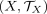
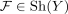
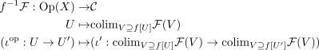
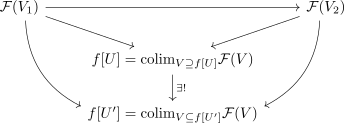
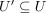
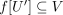

inverse image sheaf
1. Definition
Let

and be topological spaces and
be topological spaces and  a continuous map.
Given a (sufficiently) bicomplete category
a continuous map.
Given a (sufficiently) bicomplete category  the
the  -valued category of sheaves , the inverse image sheaf of a sheaf
-valued category of sheaves , the inverse image sheaf of a sheaf 
is given as sheafification of

where the morphism is given by applying the universal property, since for

it follows, thatand hence for also

functorality follows analogously to the colim functor